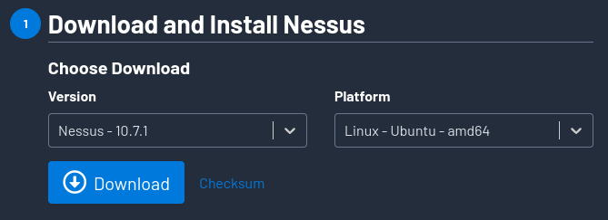
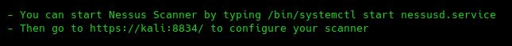
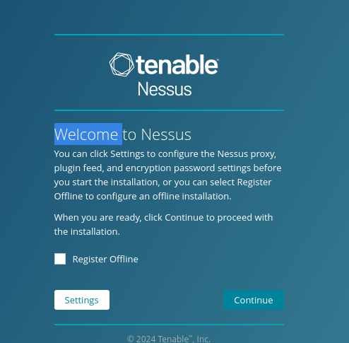
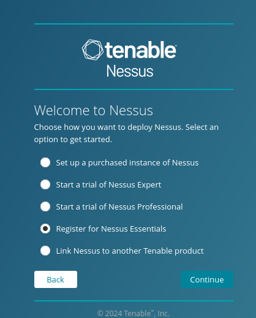
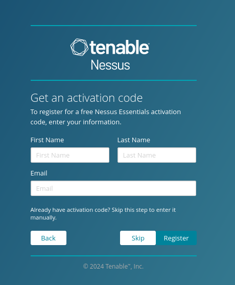
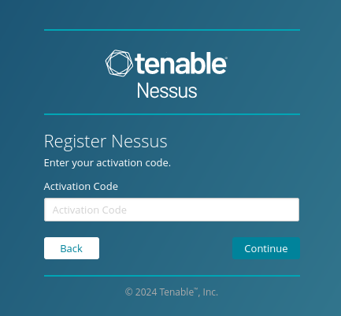
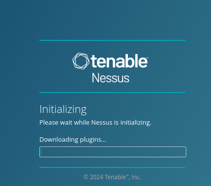

Como herramientas podemos encontrar Nesus que es muy buena para encontrar vulnerabilidades en los servicios expuestos en un servidor.
https://github.com/topics/nessus-scanner
https://es-la.tenable.com/products/nessus/nessus-essentials
https://www.tenable.com/downloads/nessus?loginAttempted=true

sudo chmod 777 Nessus-10.7.1-ubuntu1404_amd64.deb
sudo apt install ./Nessus-10.7.1-ubuntu1404_amd64.deb

Nexus se compone de dos componentes principales por un lado, un daemon que es concretamente el que se va a encargar de realizar los escaneos.
Tiene otro componente que es Nexus como tal, que es una interfaz gráfica que nos permite gestionar los escaneos.
/bin/systemctl start nessusd.service
https://kali:8834/



SKIP

Introducimos el código que nos mandan al registrarnos
